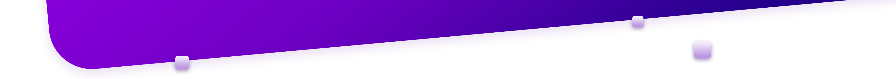
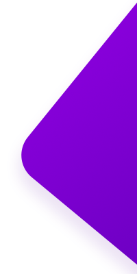

<div class="module-cancel">
    
    
    
    <div class="module-cancel-box">
        <p>确定取消暗中观察?</p>
        <div class="module-cancel-box-item">
            <input class="module-cancel-box-item-input" type="tel" placeholder="手机号" id="phone" v-model="tel">
            <!--<div class="redmsg">手机号错误</div>-->
        </div>
        <div class="module-cancel-box-item">
            <input class="module-cancel-box-item-input code" type="tel" placeholder="验证码" v-model="code">
            <a class="module-cancel-box-item-getcode" @click="getCode">{{content}}</a>
        </div>
        <div class="module-cancel-box-item textarea">
            <textarea placeholder="朋友请告诉我们取消的原因吧,我们有多想进步你知道吗?" v-model="reason"></textarea>
        </div>
        <button class="module-cancel-box-button" @click="cancelObser">取消观察</button>
    </div>
</div>
